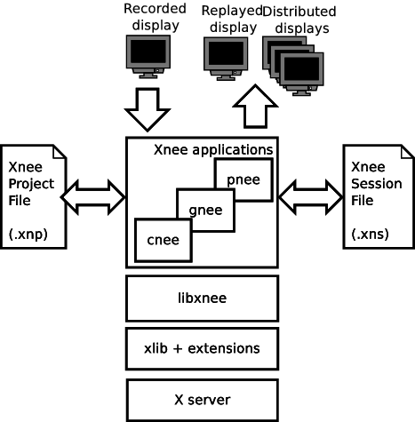
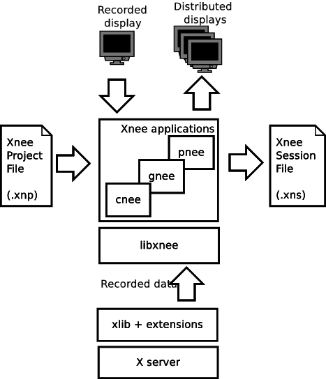
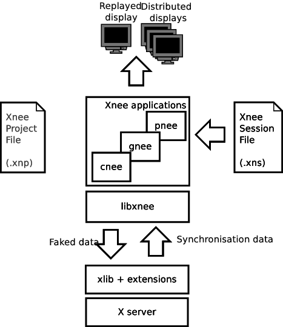

| [Top] | [Contents] | [Index] | [ ? ] |
| 1. Summary | ||
| 2. Getting started | ||
| 3. Functional overview | ||
| 4. Installation | ||
| 5. Examples | examples | |
| 7. File types and format | File format | |
| 6. Xnee Programs | Programs | |
| 8. Xnee Internals | Internals | |
| 9. Xnee Requirements | Requirements | |
| 10. FAQ | ||
| A. Copying This Manual | ||
| B. Index |
| [ < ] | [ > ] | [ << ] | [ Up ] | [ >> ] | [Top] | [Contents] | [Index] | [ ? ] |
| [ < ] | [ > ] | [ << ] | [ Up ] | [ >> ] | [Top] | [Contents] | [Index] | [ ? ] |
Xnee is a suite of programs that can record, replay and distribute user actions under the X11 environment. Think of it as a robot that can imitate the job you just did.
Xnee consists of one library and two applications
cnee - command line program
gnee - graphical user interface program
pnee - a Gnome Panel Applet
libxnee - library used by xnee and gnee
| [ < ] | [ > ] | [ << ] | [ Up ] | [ >> ] | [Top] | [Contents] | [Index] | [ ? ] |
Xnee can be used for multiple purposes, although it was initially designed as a test tool. The most used features are the foloowing:
Test tool - Instead of performing test cases for a GUI (or CLI program) over and over again, the test cases can be automated. Simply record a user session and replay it later.
Performance test tool - If you want to simulate lots of simultaneous users in a network (or a local machine) you can use Xnee. Simply record a user session and start multiple instances of Xnee.
Demonstration tool - You can use Xnee to demonstrate the features of your program. Simply record a user session and replay it later.
Distribution tool - If you want to send over your mouse/keyboard actions to another display you can use the built-in distribution mechanism in Xnee.
Macro recorder/replayer - By binding a key and modifier combination (e.g using xrebind) to replay a recorded session you will have a Window Manager and application independent macro.
File retyper - Xnee can retype the contents of a file. This can be useful during tests or if you want xnee to answer some command session without having to record the session.
X11 protocol sniffer - Xnee can be used as a sniffer for the X11 protocol.
| [ < ] | [ > ] | [ << ] | [ Up ] | [ >> ] | [Top] | [Contents] | [Index] | [ ? ] |
In order to verify that a program does the job it’s supposed to do,
certain tests have to be made.
These tests are, IMHO, perhaps the most boring things a programmer
can do. Xnee is designed to reduce the programmer from this burden.
Xnee started out as a commad line program. During the development
phase the main functionality was broken out to a library, called
libxnee. The command line program was renamed cnee. The thought behind
making the library was to enable the writing of other clients than
just the command line. Today there is a GUI program, gnee, and a Gnome
panel applet, pnee, that uses the library.
By using xnee your testcase(s) can be recorded and later on replayed. Xnee comes with other features For more information about these, read the Introduction.
This manual mainly focuses on the command line program, cnee. There are however a seperate chapters for the other programs.
| [ < ] | [ > ] | [ << ] | [ Up ] | [ >> ] | [Top] | [Contents] | [Index] | [ ? ] |
| [ < ] | [ > ] | [ << ] | [ Up ] | [ >> ] | [Top] | [Contents] | [Index] | [ ? ] |
To get the first feel of Xnee some simple examples are presented.
| [ < ] | [ > ] | [ << ] | [ Up ] | [ >> ] | [Top] | [Contents] | [Index] | [ ? ] |
Start a terminal emulator (e.g xterm) and then start Xnee,
|
....dont forget ’&’. The file example1.xnr contains keyboard events recorded during development of this manual. When replayed you’ll see what was typed and of course more important you’ll get i first glimpse of Xnee and its capabilities. For information on where to find the example files, see below.
| [ < ] | [ > ] | [ << ] | [ Up ] | [ >> ] | [Top] | [Contents] | [Index] | [ ? ] |
We move on to a (very) simple recording session. Start a terminal emulator (e.g xterm) and your favorite editor. Move the pointer to one of the terminal windows and start Xnee.
|
Move the pointer to the editor and get focus (e.g click the window frame). After 5 seconds you can type whatever you want to record (20 press- and relase events of the keyboard are recorded). We are done and you have recorded your first session! Leave the desktop as it is and go forward to the next example.
| [ < ] | [ > ] | [ << ] | [ Up ] | [ >> ] | [Top] | [Contents] | [Index] | [ ? ] |
Start one terminal emulator (e.g xterm). Let Xnee repeat the stuff you did in the example above. Undo all changes in the editor that was made in the previous example. Move the pointer to one of the terminal windows and start Xnee.
|
Move the pointer to the editor and get focus (e.g click the window frame). After 5 seconds you will see your typings in the example above being repeated.
| [ < ] | [ > ] | [ << ] | [ Up ] | [ >> ] | [Top] | [Contents] | [Index] | [ ? ] |
We move on to another simple recording session. Start a terminal emulator (e.g xterm). Move the pointer to the terminal window and start Xnee.
|
After 5 seconds you can move the pointer around (20 motion events are recorded).
| [ < ] | [ > ] | [ << ] | [ Up ] | [ >> ] | [Top] | [Contents] | [Index] | [ ? ] |
Let Xnee repeat the stuff you did in the example above.. Move the pointer to the terminal window and start Xnee.
|
After 5 seconds you will see your mouse motions in the example above being repplayed.
| [ < ] | [ > ] | [ << ] | [ Up ] | [ >> ] | [Top] | [Contents] | [Index] | [ ? ] |
Let Xnee retype (type again) the text in a text file.
Move the pointer to the terminal window and create a text file containing
the command ls -l.
|
And after that you start Xnee.
|
After 5 seconds you will see Xnee type ls -l, which probably will
list the files in the current directory.
| [ < ] | [ > ] | [ << ] | [ Up ] | [ >> ] | [Top] | [Contents] | [Index] | [ ? ] |
The example file above (example1.xnr) is a session file that has been delivered with the sources (allthough not installed), rpm and with the Xnee Documentation Package. The file(s) can be found:
| Distribution | Location | |
| RPM | /usr/lib/xnee/session | |
| Source | ./sessions/ | |
| Document Package | ./sessions/ |
| [ < ] | [ > ] | [ << ] | [ Up ] | [ >> ] | [Top] | [Contents] | [Index] | [ ? ] |
| [ < ] | [ > ] | [ << ] | [ Up ] | [ >> ] | [Top] | [Contents] | [Index] | [ ? ] |
The Xnee applications (gnee and xnee) receives X11 protocol data (e.g. events) from an X server (using libxnee) and print them to a file, called Xnee Session File. Theses events are later read from the session file and replayed. Gnee and xnee can read its settings from a file, called Xnee Project File, or from command line (cnee) or via the GUI (gnee).
Events directly generated by the user (e.g KeyPress) can be replayed or faked. Requests, replies, errors and events not directly generated by the user (e.g MapNotify) can be recorded as well. By using these data Xnee can replay with synchronisation.
This picture gives an overview of Xnee and the files used.

In this section you will be given information about key concepts in X11 and Xnee. It is
vital that you read through this chapter.
| [ < ] | [ > ] | [ << ] | [ Up ] | [ >> ] | [Top] | [Contents] | [Index] | [ ? ] |
Xnee has four modes:
The distribution mechanism can be used together with the other three.
| [ < ] | [ > ] | [ << ] | [ Up ] | [ >> ] | [Top] | [Contents] | [Index] | [ ? ] |
When record mode is used Xnee receives a copy of the data sent to and from the X server. The copy is printed to a file. Xnee can record the whole X11 protocol, not just mouse and keyboard events.
This picture gives an overview of Xnee and the files used when recording.

| [ < ] | [ > ] | [ << ] | [ Up ] | [ >> ] | [Top] | [Contents] | [Index] | [ ? ] |
When replay mode is used Xnee reads data from a file or stdin. These data is either sent to the server (if it is a keyboard or a mouse event) or used to synchronise with (if any of the other data).
This picture gives an overview of Xnee and the files used when replaying.

| [ < ] | [ > ] | [ << ] | [ Up ] | [ >> ] | [Top] | [Contents] | [Index] | [ ? ] |
Xnee can retype the contents of a text file. This is useful when combining replaying of different recorded session. You can change the text written in for example an editor (e.g emacs) without having to re-record the complete sessions.
| [ < ] | [ > ] | [ << ] | [ Up ] | [ >> ] | [Top] | [Contents] | [Index] | [ ? ] |
Xnee can fake mouse and keyboard events on multiple displays. This distribution mechanism can be used when recording, replaying or retyping.
| [ < ] | [ > ] | [ << ] | [ Up ] | [ >> ] | [Top] | [Contents] | [Index] | [ ? ] |
What data to record is specified using ranges. Ranges has a start value and a stop value. The following data can be recorded:
| Xnee name | X Protocol Name | |
| core-requests | Request | |
| device-event | Event | |
| delivered-event | Event | |
| error | Error | |
| reply | Reply | |
| ext-requests.ext-major | Extension Request | |
| ext-requests.ext-minor | Extension Request | |
| ext-replies.ext-major | Extension Reply | |
| ext-replies.ext-minor | Extension Reply |
When specifying the ranges when using xnee you can either type the integer value
of the data or the name of the data. To find out what number belongs to what
data name, you can use the --print-data-name option. For an explanation
of the X protocol data, please read the "X Record Extension Library" or the
"Record Extension Protocol Specification".
| [ < ] | [ > ] | [ << ] | [ Up ] | [ >> ] | [Top] | [Contents] | [Index] | [ ? ] |
Xnee has the ability to skip recording of succesive motion events with no
other data in between. This option is intended to reduce the number of data
recorded by leaving out unnecessary data. This feature can be invoked with
the --first-last flag.
| [ < ] | [ > ] | [ << ] | [ Up ] | [ >> ] | [Top] | [Contents] | [Index] | [ ? ] |
Sometimes when Xnee starts recording data, the keyrelease (caused by pressing and
releasing RETURN to execute the Xnee command line) is recorded. This single
keyrelease (with no corresponding keypress) might confuse the X server.
With the --time <secs> option Xnee can be paused for a number of seconds
before recording/replaying/retyping starts.
| [ < ] | [ > ] | [ << ] | [ Up ] | [ >> ] | [Top] | [Contents] | [Index] | [ ? ] |
When enabling verbose mode (--verbose) Xnee prints a lot of information
about it’s state. This option is only intended for runtime debugging.
| [ < ] | [ > ] | [ << ] | [ Up ] | [ >> ] | [Top] | [Contents] | [Index] | [ ? ] |
Sometimes it’s hard to decide what data to use when synchronising. To do this
you have to analyse what data is sent from the server when recording. Instead of
reading the data number, s tring representation of the data is printed out.
To enable this option, use the --human-printouts.
| [ < ] | [ > ] | [ << ] | [ Up ] | [ >> ] | [Top] | [Contents] | [Index] | [ ? ] |
| [ < ] | [ > ] | [ << ] | [ Up ] | [ >> ] | [Top] | [Contents] | [Index] | [ ? ] |
To get information about how to use Xnee’s command line options please use the man page(s).
| [ < ] | [ > ] | [ << ] | [ Up ] | [ >> ] | [Top] | [Contents] | [Index] | [ ? ] |
To use a Project file use the --project option, e.g
cnee --project xnee/projects/netscape.xns.
| [ < ] | [ > ] | [ << ] | [ Up ] | [ >> ] | [Top] | [Contents] | [Index] | [ ? ] |
To use a session file use the --file option, e.g
cnee --file user1_session.xns
| [ < ] | [ > ] | [ << ] | [ Up ] | [ >> ] | [Top] | [Contents] | [Index] | [ ? ] |
Interupting Xnee when recording or replaying can be done as follows
The prefered way to interrupt xnee is to use the modifier+key.
| [ < ] | [ > ] | [ << ] | [ Up ] | [ >> ] | [Top] | [Contents] | [Index] | [ ? ] |
It is possible to specify a modifier (e.g Control button) and a key (e.g ’a’) that will stop the Xnee session. When using this option make sure that the modifier/key is not used in any way by the applications you are recording. You can specify a key+modifier to stop, pause and resume xnee. You can also insert a mark in the recorded session file.
| [ < ] | [ > ] | [ << ] | [ Up ] | [ >> ] | [Top] | [Contents] | [Index] | [ ? ] |
By specifying the number of data to record (--loops) xnee stops when this number
of data is received from the server. When replaying the same amount of data
is replayed.
| [ < ] | [ > ] | [ << ] | [ Up ] | [ >> ] | [Top] | [Contents] | [Index] | [ ? ] |
The easiest way to send a signal to a process is by launching Xnee from a terminal window (e.g xterm) and then press Control-c which will send the SIGTERM signal to Xnee. When replaying it can sometimes be hard to move the pointer into the terminal window (e.g if a lot of motion events were recorded that will let you compete with Xnee on where the mouse pointer shall be located. Beleive me, you’ll end up lossing that battle).
When using Control-c to stop Xnee you must be aware of that the pressing of the Control key gets recorded. When replaying a recorded session ending with pressing of Control your apps may think you are pressing the Control key. A simple solution for this is to press and release the Control.
| [ < ] | [ > ] | [ << ] | [ Up ] | [ >> ] | [Top] | [Contents] | [Index] | [ ? ] |
Xnee stops its current action when the user presses the key combination as specified during setup. Xnee will be shut gracefully.
| [ < ] | [ > ] | [ << ] | [ Up ] | [ >> ] | [Top] | [Contents] | [Index] | [ ? ] |
Xnee pause its current action when the user presses the key combination as specified during setup. Xnee will be in paused mode until the user stops or resumes Xnee.
| [ < ] | [ > ] | [ << ] | [ Up ] | [ >> ] | [Top] | [Contents] | [Index] | [ ? ] |
Xnee resumes its current paused action when the user presses the key combination as specified during setup. Xnee will continue where it was paused.
| [ < ] | [ > ] | [ << ] | [ Up ] | [ >> ] | [Top] | [Contents] | [Index] | [ ? ] |
When the user presses the key combination as specified during setup Xnee will print a mark in the session file containing a time stamp. This feature is intended be used when you want to mark an interresting time/event during recording. After recording has finished you can add Xnee scripting calls to Xnee which will be interpreted and executed as if they were recorded.
| [ < ] | [ > ] | [ << ] | [ Up ] | [ >> ] | [Top] | [Contents] | [Index] | [ ? ] |
There a a few ways to limit the number of data Xnee records.
| [ < ] | [ > ] | [ << ] | [ Up ] | [ >> ] | [Top] | [Contents] | [Index] | [ ? ] |
When having received the specified amount of events from the server, Xnee stops the recording. For more information on how to use this option, read the man page for cnee or the user manual for gnee.
| [ < ] | [ > ] | [ << ] | [ Up ] | [ >> ] | [Top] | [Contents] | [Index] | [ ? ] |
When having received the specified amount of data from the server, Xnee stops the recording. For more information on how to use this option, read the man page for cnee or the user manual for gnee.
| [ < ] | [ > ] | [ << ] | [ Up ] | [ >> ] | [Top] | [Contents] | [Index] | [ ? ] |
When having recorded for the specified amount of time from the server, Xnee stops the recording. For more information on how to use this option, read the man page for cnee or the user manual for gnee.
| [ < ] | [ > ] | [ << ] | [ Up ] | [ >> ] | [Top] | [Contents] | [Index] | [ ? ] |
The easiest way to send a signal to a process is by launching Xnee from a terminal window (e.g xterm). By pressing Control-c xterm sends the SIGTERM signal to Xnee. When replaying it can sometimes be hard to move the pointer into the terminal window (e.g if a lot of motion events were recorded that will let you compete with Xnee on where the mouse pointer shall be located. Beleive me, you’ll end up lossing that battle).
| [ < ] | [ > ] | [ << ] | [ Up ] | [ >> ] | [Top] | [Contents] | [Index] | [ ? ] |
Xnee supports plugins since version 1.07. For information about how to write plugins, download the source code and look at the plugin example which is delivered with Xnee.
| [ < ] | [ > ] | [ << ] | [ Up ] | [ >> ] | [Top] | [Contents] | [Index] | [ ? ] |
| [ < ] | [ > ] | [ << ] | [ Up ] | [ >> ] | [Top] | [Contents] | [Index] | [ ? ] |
To build and install Xnee do the following: Download the following source files into a directory (version numbers given here are just examples)
Unzip the source file
|
Untar the source file
|
Enter the Xnee directory
|
Generate the makefiles
|
or if you want to specify which directory to install xnee to
|
Build Xnee
|
Install (as root) if you want libxnee to be installed. If not, skip the following command. Installation of libxnee is not needed to build cnee and gnee.
|
| [ < ] | [ > ] | [ << ] | [ Up ] | [ >> ] | [Top] | [Contents] | [Index] | [ ? ] |
To unpack, build and install Xnee from the sourcefiles do the following:
Download the source files into a directory
Unzip the source file
|
Untar the source file
|
Enter the Xnee directory
|
Build Xnee
|
Copy the Xnee binary (xnee/src/xnee) to a directory
|
| [ < ] | [ > ] | [ << ] | [ Up ] | [ >> ] | [Top] | [Contents] | [Index] | [ ? ] |
Download the xnee source code from the CVS repository at http://savannah.gnu.org. Instructions on how to do this can be found there as well.
Build Xnee
|
Build Xnee Documentation
|
| [ < ] | [ > ] | [ << ] | [ Up ] | [ >> ] | [Top] | [Contents] | [Index] | [ ? ] |
| [ < ] | [ > ] | [ << ] | [ Up ] | [ >> ] | [Top] | [Contents] | [Index] | [ ? ] |
| [ < ] | [ > ] | [ << ] | [ Up ] | [ >> ] | [Top] | [Contents] | [Index] | [ ? ] |
Record mouse motions only and save the session to mouse-rec.xnl.
|
After having typed this you can move your mouse round for a while. After Xnee has exited you will be able to replay your motions. Xnee will stop after having record 100 events (this is the default behaviour).
| [ < ] | [ > ] | [ << ] | [ Up ] | [ >> ] | [Top] | [Contents] | [Index] | [ ? ] |
Record keyboard events only and save log to kbd-rec.xnl.
|
After having typed this Xnee records all your keyboard actions. After Xnee has exited you will be able to replay your keyboard actions. Xnee will stop after having record 100 events (this is the default behaviour).
| [ < ] | [ > ] | [ << ] | [ Up ] | [ >> ] | [Top] | [Contents] | [Index] | [ ? ] |
Record keyboard and mouse and save log to km-rec.xnl.
|
After having typed this Xnee records all your keyboard and mouse actions. So now move your pointer and write some stuff with your keyboard. After Xnee has exited you will be able to replay your keyboard and mouse actions. Xnee will stop after having record 100 events (this is the default behaviour).
| [ < ] | [ > ] | [ << ] | [ Up ] | [ >> ] | [Top] | [Contents] | [Index] | [ ? ] |
Record a gnumeric session. Record 400 events. Save output in file gnumeric.xnl Start a terminal emulator (e.g xterm)
|
Start Xnee
|
Start gnumeric
|
Start using gnumeric. Browse the menus above, reset the fonts etc.
| [ < ] | [ > ] | [ << ] | [ Up ] | [ >> ] | [Top] | [Contents] | [Index] | [ ? ] |
Record a gnumeric session. Record 400 events. Save output in file gnumeric2.xnl
Start a terminal emulator (e.g xterm)
xterm&
Start Xnee
|
Start gnumeric
gnumeric&
Start using gnumeric. Browse the menus above, reset the fonts etc.
| [ < ] | [ > ] | [ << ] | [ Up ] | [ >> ] | [Top] | [Contents] | [Index] | [ ? ] |
| [ < ] | [ > ] | [ << ] | [ Up ] | [ >> ] | [Top] | [Contents] | [Index] | [ ? ] |
Replay mouse motions as found in the file mouse-rec.xnl.
|
Xnee will now imitate exactly what you did when you recorded this file.
| [ < ] | [ > ] | [ << ] | [ Up ] | [ >> ] | [Top] | [Contents] | [Index] | [ ? ] |
Replay mouse motions as found in the file mouse-rec.xnl but with the speed set to 50% of the recorded.
|
Xnee will now imitate exactly what you did when you recorded this file, allthough it will be done in 50% of the recorded time.
| [ < ] | [ > ] | [ << ] | [ Up ] | [ >> ] | [Top] | [Contents] | [Index] | [ ? ] |
Replay mouse motions as found in the file mouse-rec.xnl but with the speed set to 200% of the recorded.
|
Xnee will now imitate exactly what you did when you recorded this file, allthough it will be done twice as fast as when recorded.
| [ < ] | [ > ] | [ << ] | [ Up ] | [ >> ] | [Top] | [Contents] | [Index] | [ ? ] |
Replay keyboard events from file kbd-rec.xnl.
|
After having typed this Xnee replays all your keyboard actions. After Xnee has exited you will be able to replay your keyboard actions.
| [ < ] | [ > ] | [ << ] | [ Up ] | [ >> ] | [Top] | [Contents] | [Index] | [ ? ] |
Replay keyboard and mouse from the file km-rec.xnl.
|
After having typed this Xnee replays all your keyboard and mouse actions. Xnee moves your pointer and writes the the same stuff as you did when recording.
| [ < ] | [ > ] | [ << ] | [ Up ] | [ >> ] | [Top] | [Contents] | [Index] | [ ? ] |
Replay the gnumeric session above
Start a terminal emulator (e.g xterm)
xterm&
Start a new fresh gnumeric spreadsheet
gnumeric&
Start Xnee
|
Xnee will now do the same stuff you did when recording. It may happen that some user actions are replayed to early. This is so because Xnee has no way of knowing if it is in sync with the recorded session.
| [ < ] | [ > ] | [ << ] | [ Up ] | [ >> ] | [Top] | [Contents] | [Index] | [ ? ] |
Replay the second gnumeric session above.
Start a terminal emulator (e.g xterm)
xterm&
Start a new fresh gnumeric spreadsheet
gnumeric&
Start Xnee
|
Xnee will now do the same stuff you did when recording. It may happen that the replaying slows down. This is because Xnee is currently out of sync. When being out of sync Xnee slows down a bit and checks the thresholds if it is allowed to continue. Xnee will most probably find itself in sync after a short while. All recorded user actions should have occured the same way as when recording.
| [ < ] | [ > ] | [ << ] | [ Up ] | [ >> ] | [Top] | [Contents] | [Index] | [ ? ] |
Replay the second gnumeric session above.
Start a terminal emulator (e.g xterm)
xterm&
Start a new fresh gnumeric spreadsheet
gnumeric&
| [ < ] | [ > ] | [ << ] | [ Up ] | [ >> ] | [Top] | [Contents] | [Index] | [ ? ] |
| [ < ] | [ > ] | [ << ] | [ Up ] | [ >> ] | [Top] | [Contents] | [Index] | [ ? ] |
If you want Xnee to fake a user typing the help printout from xnee
you can use the --type-help option.
Start a terminal emulator (e.g xterm) and an editor (e.g emacs).
|
|
Retype the help printout by starting xnee with a 10 seconds delay delay.
|
Move your mouse to the editor and make the editor have focus. Wait a few seconds and xnee will type the help. You will now also have a copy of help text.
| [ < ] | [ > ] | [ << ] | [ Up ] | [ >> ] | [Top] | [Contents] | [Index] | [ ? ] |
If you want Xnee to fake a user typing the letters as found in a text
file you can use the retype mode. Note that it isn’t possible to retype all
characters yet. This will be implemented as soon as possible. We’ll give
an example on how to use this mode.
Start a terminal emulator (e.g xterm)
|
Create a text file
|
Retype the contents of this file to another file by starting xnee with a 10 seconds delay delay.
|
Start the fabulous editor cat
|
Wait a few seconds and xnee will retype the letters in the file
testfile.txt. You will now also have a copy of that file.
The copy is called copiedfile.txt. This is a realy a stupid way
to copy a file but this option opens up a few possibilities.
| [ < ] | [ > ] | [ << ] | [ Up ] | [ >> ] | [Top] | [Contents] | [Index] | [ ? ] |
With the distribution mode Xnee can send your device events to multiple displays.
| [ < ] | [ > ] | [ << ] | [ Up ] | [ >> ] | [Top] | [Contents] | [Index] | [ ? ] |
You can distribute your mouse motions to the displays frodo:0.0 and
sam:0.0
Start a terminal emulator (e.g xterm)
|
Start xnee
|
If you have setup authority correct on frodo and sam you will see all you mouse motions being done on those displays as well.
| [ < ] | [ > ] | [ << ] | [ Up ] | [ >> ] | [Top] | [Contents] | [Index] | [ ? ] |
Replay and distribute mouse motions as found in the file
mouse-rec.xnl.
|
Xnee will now imitate exactly what you did when you recorded this file on your host as well on frodo and sam.
| [ < ] | [ > ] | [ << ] | [ Up ] | [ >> ] | [Top] | [Contents] | [Index] | [ ? ] |
If you want Xnee to to distribute the fakeing of a user typing the
letters as found in a text file you can use the retype mode together
with the distribution mode.
Start a terminal emulator (e.g xterm) on each of the hosts
|
Create a text file.
|
Retype the contents of this file to another file by starting xnee with a 10 seconds delay delay.
|
Start the fabulous editor cat on the terminal emulators on each the
terminals.
|
If you have setup authority correct on frodo and sam you will, after
a few seconds, see xnee retype the letters in the file
distfile.txt. You will now also have three copies of that file.
On copy on each host. The copy is called copiedfile.txt. This might
seem like a stupid way to copy a file to three locations but this
is just an example.
| [ < ] | [ > ] | [ << ] | [ Up ] | [ >> ] | [Top] | [Contents] | [Index] | [ ? ] |
| [ < ] | [ > ] | [ << ] | [ Up ] | [ >> ] | [Top] | [Contents] | [Index] | [ ? ] |
You can stop xnee by specifying a key. Make sure that this key isn’t grabbed by another X client (e.g by the Window Manager). Let’s say that you want Xnee to stop recording if you press Control and h.
|
This will make xnee record mouse events until you press h.
All printouts are done to stdout so you can see that Xnee stops when you
press the key.
Move your mouse for a while and you’ll see xnee print out lots of lines.
Press h.
Xnee will now have stopped recording.
| [ < ] | [ > ] | [ << ] | [ Up ] | [ >> ] | [Top] | [Contents] | [Index] | [ ? ] |
You can pause and resum xnee by specifying a key. Make sure that this key isn’t grabbed by another X client (e.g by the Window Manager). Let’s say that you want Xnee to pause recording if you press p and to resume when pressing Comntrol and r.
|
This will make xnee record mouse events until you press p.
All printouts are done to stdout so you can see that Xnee stops when you
press the key.
Move your mouse for a while and you’ll see xnee print out lots of lines.
Press p.
Xnee will now have paused recording. Move your mouse for a while and note that
nothing is printed.
Press r.
Xnee will now have resumed recording. Move your mouse for a while and note that
xnee begins its printouts.
| [ < ] | [ > ] | [ << ] | [ Up ] | [ >> ] | [Top] | [Contents] | [Index] | [ ? ] |
Macors can be used in various applications allthough many applicaions have a macro functionality built in (e.g emacs).
| [ < ] | [ > ] | [ << ] | [ Up ] | [ >> ] | [Top] | [Contents] | [Index] | [ ? ] |
There are plenty of tools that bind a key combination to
different actions. For various reasons the author of this manual is familliar
with xrebind so we will use xrebind in this example.
The first thing to do is to decide which key combination to tie
to the wanted action. Let’s say we want to use one of the funtion keys, F1.
We then have to find out which keycode belongs to that key. The action we will
bind to this key combination will be the replaying of a recorded
session from the previous examples.
We use Xnee to find the keycode for F1. Start xnee.
|
Press the F1 key and see what number was printed out. It will look something like this:
|
The interesting part here is the 6th column. In our example we find 67, which
is the keycode for F1.
Now we move on to setup xrebind to grab F1 and bind that to replay the
mouse motions from the file mouse-rec.xnl. Open or create a new file
in your home directory called .xrbrc and add the lines.
|
Let’s try it. Start xrebind with verbose printouts.
|
Press F1 and the recorded session from the previous example shall be replayed. You can also see in the verbose printouts that xrebind executes xnee.
| [ < ] | [ > ] | [ << ] | [ Up ] | [ >> ] | [Top] | [Contents] | [Index] | [ ? ] |
Let’s say we want to bind Control and e to execute the session as in the
example above. This time setting up xrebind is a bit easier.
Setup xrebind to grab F1 and bind that to replay the
mouse motions from the file mouse-rec.xnl by opening or create a
new file in your home directory called .xrbrc and add the lines.
|
Let’s try it. Start xrebind with verbose printouts.
|
Press Control and e and the recorded session from the previous example shall be replayed.
| [ < ] | [ > ] | [ << ] | [ Up ] | [ >> ] | [Top] | [Contents] | [Index] | [ ? ] |
| [ < ] | [ > ] | [ << ] | [ Up ] | [ >> ] | [Top] | [Contents] | [Index] | [ ? ] |
To enable verbose mode, start xnee like this
|
Move the mouse for a while and you’ll lots of verbose printouts that usualy isn’t there.
| [ < ] | [ > ] | [ << ] | [ Up ] | [ >> ] | [Top] | [Contents] | [Index] | [ ? ] |
To enable human printout mode, start xnee like this
|
Move the mouse for a while and you’ll see the data printed out in an almost human friendly format.
| [ < ] | [ > ] | [ << ] | [ Up ] | [ >> ] | [Top] | [Contents] | [Index] | [ ? ] |
If a session was recorded on a screen with another resolution than on the one where we replay the session xnee will translate all coordinates automagically. However, you can force xnee to use a specific resolution when replaying. To do this, start xnee like this
|
Xnee will now replay the events recorded in the sessions file
mouse-rec.xnl as if the screen has a resolution of 800x600.
| [ < ] | [ > ] | [ << ] | [ Up ] | [ >> ] | [Top] | [Contents] | [Index] | [ ? ] |
If a session was recording a centered window with a window manager and is to bo replayed without a window manager (still centered) you can use the offset switch to make Xnee replay the events in order to get the coordinates right.
|
Xnee will now replay the events recorded in the sessions file
mouse-rec.xnl and adding 12 to the x coordinate and subtract
7 from the y coordinate.
| [ < ] | [ > ] | [ << ] | [ Up ] | [ >> ] | [Top] | [Contents] | [Index] | [ ? ] |
For some reason a replayed window may pop up at a different position
as when recorded. Xnee can try to solve this by adding the
recall-window-position option during replay.
|
If a window pops up at a different position when replaying (as whe recorded) Xnee moves the new window to the same position as when recorded.
| [ < ] | [ > ] | [ << ] | [ Up ] | [ >> ] | [Top] | [Contents] | [Index] | [ ? ] |
If a session was recorded on a screen with another resolution than the on the one where we replay the session xnee will translate all coordinates automagically. However, you can force xnee not to use translation. To do this, start xnee like this
|
Xnee will now replay the events recorded in the sessions file
mouse-rec.xnl as if the screen had the same resolution
the recorded one.
| [ < ] | [ > ] | [ << ] | [ Up ] | [ >> ] | [Top] | [Contents] | [Index] | [ ? ] |
If you want to record another display than the default, as set in the
DISPLAY variable, you use the --display option.
|
Xnee will now record the mouse events on the display frodo:0.0.
| [ < ] | [ > ] | [ << ] | [ Up ] | [ >> ] | [Top] | [Contents] | [Index] | [ ? ] |
If you want to replay to another display than the default, as set in the
DISPLAY variable, you use the --display option.
|
Xnee will now replay the mouse events on the display frodo:0.0.
| [ < ] | [ > ] | [ << ] | [ Up ] | [ >> ] | [Top] | [Contents] | [Index] | [ ? ] |
Insted of onvoking Xnee for every time you need to fake events you can make use of the shell functions as delivered with Xnee. With these functions you can start one instance of Xnee and fake device events whenever you need.
|
This example will fake press and release of the mouse button and do fake press and release of ls followed by a press and release of Enter.... and of course, you’ll get a tar file in /tmp.
Make sure that the path to the xnee.sh is correct.
| [ < ] | [ > ] | [ << ] | [ Up ] | [ >> ] | [Top] | [Contents] | [Index] | [ ? ] |
GNU Xnee consists of three different programs, cnee, gnee and pnee.
| [ < ] | [ > ] | [ << ] | [ Up ] | [ >> ] | [Top] | [Contents] | [Index] | [ ? ] |
This is the Xnee command line program. This programs contains most features and is the basis for this documentation.
For a user not used to X11 it is probably a good idea to start with
gnee or pnee instead or start using cnee in demonstration mode:
cnee --demo
| [ < ] | [ > ] | [ << ] | [ Up ] | [ >> ] | [Top] | [Contents] | [Index] | [ ? ] |
This is a GUI (using GTK2/Gnome) with most of the features of cnee. The GUI has been designed for ease of use.
Currently there are no plans for making a separate manual for gnee.
| [ < ] | [ > ] | [ << ] | [ Up ] | [ >> ] | [Top] | [Contents] | [Index] | [ ? ] |
This is a Gnome panel applet with a minimal set of features. Ease of use is the motto for this program. It is intended for users not being experts on X11 but still wants to record and replay a session for what ever purpose. By default pnee have settings that need not be changed for most cases. You can, however, launch the preferences dialog and set your preferred values as in most other applets.
If you find pnee a bit limited we suggest you switch over to using cnee.
Note: If pnee hangs you can press the stop button twice to make a reset. Hopefully this will solve the problem.
| [ < ] | [ > ] | [ << ] | [ Up ] | [ >> ] | [Top] | [Contents] | [Index] | [ ? ] |
By default pnee writes error, verbose printouts and warnings to stderr which will not be visible to you as a user, since pnee will be started automatically along with the other applets. If you start up the preferences dialog you can choose a file for pnee printouts. After that you should turn on verbose logging (also in the preferences dialog) and then reproduce the bug and send over the file to xnee-bug@gnu.org.
| [ < ] | [ > ] | [ << ] | [ Up ] | [ >> ] | [Top] | [Contents] | [Index] | [ ? ] |
The files used by Xnee are
These files must follow the Xnee File Format.
| [ < ] | [ > ] | [ << ] | [ Up ] | [ >> ] | [Top] | [Contents] | [Index] | [ ? ] |
Xnee can be set either using command line options (when using xnee) or by clicking the correct buttons etc in the GUI (using gnee). Instead of setting the same settings over and over again, you can use the Xnee Project File.
| [ < ] | [ > ] | [ << ] | [ Up ] | [ >> ] | [Top] | [Contents] | [Index] | [ ? ] |
You can create a project by yourself. This can be done using
the write-settings option in cnee or the “save settings to file”
when using gnee or you can use the Xnee GUI (gnee) to write one.
You can also write one by yourself in your favorite editor. Just make sure you
follow the Xnee format. For information and specification on this format read
the Xnee format chapter.
The authors of Xnee suggests you start off with a generated project file. To get one
such file, type the following
cnee --mouse --keyboard --write-settings new_proj.xnp. You will now
have a file new_proj.xnp with some useful values, which you can edit as you wish.
To use this file to record, simply type
cnee --record --project new_proj.xnp
| [ < ] | [ > ] | [ << ] | [ Up ] | [ >> ] | [Top] | [Contents] | [Index] | [ ? ] |
The Xnee session files are the printouts from a recorded session following the Xnee File Format. For information and specification on this format read the Xnee File Format chapter.
| [ < ] | [ > ] | [ << ] | [ Up ] | [ >> ] | [Top] | [Contents] | [Index] | [ ? ] |
The Xnee Format is divided into different directives. The format is line based, meaning that
These directives are definied as follows.
| [ < ] | [ > ] | [ << ] | [ Up ] | [ >> ] | [Top] | [Contents] | [Index] | [ ? ] |
The following directives are used in Xnee:
| Directives | Description | |
| Comment | This is used to comment the various files | |
| Project | These contains information about the session- or project file | |
| Settings | Data used when recording and replaying | |
| Replay data | Recorded replayable data (used when replaying) | |
| Script replay data | Scriptable primitives | |
| Mark | Lines inserted in the seesion file when a modifier+key was pressed | |
| Execution | Lines that trigger the execution of an external program | |
| Project information | Project |
| [ < ] | [ > ] | [ << ] | [ Up ] | [ >> ] | [Top] | [Contents] | [Index] | [ ? ] |
| First token | Interpretation | |
| # | The whole line is ignored. |
As long as the first token is # the whole line is intrepreted as a comment, just
as in bash.
| [ < ] | [ > ] | [ << ] | [ Up ] | [ >> ] | [Top] | [Contents] | [Index] | [ ? ] |
| Settings directive | Argument | Interpretation |
| data-to-record | integer | Limits the number of data to record to to the integer value |
| events-to-record | integer | Limits the number of events to record to to the integer value |
| time-to-record | integer | Limits the number of seconds to record to to the integer value |
| display | string | Sets the display to record or replay to the string |
| distribute | string | Distribute all recorded or replayed replayable events to the display given by the string |
| file | string | Read replay data from the file given by the string |
| out-file | string | Print recorded data to the file given by the string |
| plugin | string | Use the plugin given by the string |
| first-last | boolean | Print only first and last of successive MotionNotify events |
| verbose | boolean | Use verbose debugging printout |
| buffer-verbose | boolean | Use verbose buffer verbose printouts (not built by default) |
| time | integer | Delay the start of the Xnee action |
| all-clients | boolean | Record all curret and future clients (default) |
| future-clients | boolean | Record only future clients |
| human-printout | boolean | Prints the recorded data in a (quite) more ser friendly format |
| sync-mode | boolean | Sets recording mode |
| speed-percent | integer | Sets the replaying speed percentage to the integer value |
| stop-key | string | Sets the stop key combination to the string |
| pause-key | string | Sets the pause key combination to the string |
| resume-key | string | Sets the resume key combination to the string |
| mark-key | string | Sets the mark key combination to the string |
| exec-key | string | Sets the execute key combination to string |
| replay-resolution | string | Sets the replay resolution to the string |
| replay-resolution | string | Sets the replay resolution to the string |
| recall-window-position | Use window position recall during replay | |
| resolution-adjustment | boolean | Use resolution adjustment, even if the recored resolution differs from the one to replay to |
| event-range | range | Sets the events to record |
| error-range | range | Sets the errors to record to range* |
| request-range | range | Sets the request to record to range* |
| reply-range | range | Sets the replies to record to range* |
| extension-request-major-range | range | Sets the extension requests (major) to record to range* |
| extension-request-minor-range | range | Sets the extension requests (minor) to record to range* |
| extension-reply-major-range | range | Sets the extension replies (major) to record to range* |
| extension-reply-minor-range | range | Sets the extension replies (minor) to record to range* |
| force-replay | boolean | Continue to replay even if Xnee is out of sync |
| max-threshold | integer | Sets the maximum synchronisation threshold |
| min-threshold | integer | Sets the minimum synchronisation threshold |
| total-threshold | integer | Sets the total maximum synchronisation threshold |
| events-to-record | integer | Sets the number of events to record |
| data-to-record | integer | Sets the number of data to record |
| time-to-record | integer | Sets the number of seconds to record |
| store-mouse-position | If set, Xnee records the initial mouse position and makes sure that replaying starts from there | |
| retype-press-delay | integer | Xnee delays processing after a faked key press (during retype) with integer milli seconds |
| retype-release-delay | integer | Xnee delays processing after a faked key press (during retype) with integer milli seconds |
| Settings argument | Description | Example |
integer | is an integer value. | 1 |
string | is a string. | localhost |
boolean | is a boolean value given by true/1 or false/0 | true, false, 0, 1 |
subrange | Subrange is gives a range of data by specifying a start and stop data. In the case of one data the stop data can be omitted. | 2-5 or MapNotify |
range | Ranges are a comma separated list of subranges. | 2-3,MotionNotify-MapNotify,GravityNotify,PropertyNotify,30 |
| [ < ] | [ > ] | [ << ] | [ Up ] | [ >> ] | [Top] | [Contents] | [Index] | [ ? ] |
| Replay directive | Interpretation |
| 0,0 | not valid |
| 0,1 | not valid |
| 0,2,void,void,void,keycode,screen,time | KeyPress on key with keycode, used to replay |
| 0,3,void,void,void,keycode,screen,time | KeyRelease on key with keycode, used to replay |
| 0,4,void,void,button nr,void,screen,time | ButtonPress on button nr, used to replay |
| 0,5,void,void,button nr,void,screen,time | ButtonRelease on button nr, used to replay |
| 0,6,x,y,void,void,screen,time | MotionNotify on poistion (x,y), used to replay |
| 1,request number, request type, length, request id, time | Recorded request, used during synchronisation |
| 2,reply number,time | Recorded reply, used during synchronisation |
| 3,error number,time | Recorded error, used during synchronisation |
| 6,EB+2,void,void,void,keycode,screen,time | X Input (master) KeyPress on key with keycode, used to replay |
| 6,EB+3,void,void,void,keycode,screen,time | X Input (master) KeyRelease on key with keycode, used to replay |
| 6,EB+4,void,void,button nr,void,screen,time | X Input (master) ButtonPress on button nr, used to replay |
| 6,EB+5,void,void,button nr,void,screen,time | X Input (master) ButtonRelease on button nr, used to replay |
| 6,EB+6,x,y,void,void,screen,time | X Input (master) MotionNotify on poistion (x,y), used to replay |
| 6,EB+2,void,void,void,keycode,screen,time | X Input (slave) KeyPress on key with keycode, used to replay |
| 6,EB+3,void,void,void,keycode,screen,time | X Input (slave) KeyRelease on key with keycode, used to replay |
| 6,EB+4,void,void,button nr,void,screen,time | X Input (slave) ButtonPress on button nr, used to replay |
| 6,EB+5,void,void,button nr,void,screen,time | X Input (slave) ButtonRelease on button nr, used to replay |
| 6,EB+6,x,y,void,void,screen,time | X Input (slave) MotionNotify on poistion (x,y), used to replay |
time is the time on the server the data was to the recording Xnee client. This time is used to keep the speed intact during replay.
| [ < ] | [ > ] | [ << ] | [ Up ] | [ >> ] | [Top] | [Contents] | [Index] | [ ? ] |
| Primitive | Interpretation |
| fake-motion | Fakes a mouse motion |
| fake-button-press | Fakes a button press |
| fake-button-release | Fakes a button release |
| fake-button | Fakes a button press and release |
| fake-key-press | Fakes a key press |
| fake-key-release | Fakes a key release |
| fake-key | Fakes a key press and release |
| Primitive variable | Primitive values | Interpretation |
| x=value | integer | Sets the x position used in fake-motion to value |
| x=value | +integer | Set the relative motion (x direction) used in fake-motion to value |
| x=value | -integer | Set the relative motion (x direction) used in fake-motion to value |
| y=value | integer | Sets the y position used in fake-motion to value |
| y=value | +integer | Set the relative motion (y direction) used in fake-motion to value |
| y=value | -integer | Set the relative motion (y direction) used in fake-motion to value |
| button=value | integer | set the button to fake with fake-button-press, fake-button-release and fake-button to value |
| key=value | integer | set the key to fake with fake-key-press, fake-key-release and fake-key to value |
| [ < ] | [ > ] | [ << ] | [ Up ] | [ >> ] | [Top] | [Contents] | [Index] | [ ? ] |
| First tokens | Arguments | Interpretation |
| Mark | time string | Ignored. This feature is intended to let the user do whatever he/she wants to. This will obviously lead to modifying the source code etc. |
| [ < ] | [ > ] | [ << ] | [ Up ] | [ >> ] | [Top] | [Contents] | [Index] | [ ? ] |
| First tokens | Arguments | Interpretation |
| Exec | command string | This is used during to replay to execute a given command. If no
command string is found Xnee will try to
read the command from the environment variable XNEE_EXEC_COMMAND |
| [ < ] | [ > ] | [ << ] | [ Up ] | [ >> ] | [Top] | [Contents] | [Index] | [ ? ] |
| Project information directives | Arguments |
| ProjectName | string s is the project name |
| ProjectDescription | string s is the project description |
| ProjectCreationDate | string s is the project creation date |
| ProjectCreationProgram | string s is the name of the program that create the project file |
| ProjectCreationProgVersion | string s is the version of the program that create the project file |
| ProjectLastChangeDate | string s is the date of the last change of the project file |
| ProjectLastChangeProgram | string s is the name of the program that last changed of the project file |
| ProjectLastChangeVersion | string s is the version of the program that last changed of the project file |
| ProjectCurrentChangeDate | string s is the date of the current change of the project file |
| ProjectCurrentChangeProgram | string s is the name of the program that current changed of the project file |
| ProjectCurrentChangeVersion | string s is the version of the program that current changed of the project file |
| [ < ] | [ > ] | [ << ] | [ Up ] | [ >> ] | [Top] | [Contents] | [Index] | [ ? ] |
This chapter is intended to explain the internal design of libxnee. Hopefully this will lead to a better understanding of how to use Xnee and why some features exist and why some don’t.
| [ < ] | [ > ] | [ << ] | [ Up ] | [ >> ] | [Top] | [Contents] | [Index] | [ ? ] |
We will try to go through the basics of how Xnee implements synchronisation and try to tell you, by using examples, why synhronisation is important.
| [ < ] | [ > ] | [ << ] | [ Up ] | [ >> ] | [Top] | [Contents] | [Index] | [ ? ] |
To understand why synchronisation during replay is needed an example is given.
In this example only mouse and keyboard events are recorded. Think of a session with a web browser.
During record the following is done:
When replaying this session it is often useful to synchronise the recorded session with what’s happening "right now" on the display since sometimes (or rather always) there can be different response times from the same URL.
During replay the following is done:
| [ < ] | [ > ] | [ << ] | [ Up ] | [ >> ] | [Top] | [Contents] | [Index] | [ ? ] |
Instead we could record some more data than just the mouse and keyboard events.
During record the following is done:
The non-mouse-or-keyboard events recorded (window created & text displayed) are record for synchronisation purposes.
During replay the following is done:
| [ < ] | [ > ] | [ << ] | [ Up ] | [ >> ] | [Top] | [Contents] | [Index] | [ ? ] |
So by recording more data than just the events to be replayed we can synchornise what was recorded with what is going on when replaying. But the data has to be chosen with respect to that the data:
| [ < ] | [ > ] | [ << ] | [ Up ] | [ >> ] | [Top] | [Contents] | [Index] | [ ? ] |
If we record an xterm session with all data being recorded and compare that to a recorded GIMP session with all data being recordr we can see that the data to use as synchronisation data differs. AS an example there aren’t so many windows created/destryed during an xterm session.
The solve to the the problem of finding out what data to use as synchronisation data one can:
--human-printouts option) and do some "trial and error"
| [ < ] | [ > ] | [ << ] | [ Up ] | [ >> ] | [Top] | [Contents] | [Index] | [ ? ] |
The synchronisation itself doesn’t take much time but there are timeouts that makes Xnee paues for a short while (see above). If there are many such timeouts it will lead to a slow or shaky replaying session.
| [ < ] | [ > ] | [ << ] | [ Up ] | [ >> ] | [Top] | [Contents] | [Index] | [ ? ] |
For an end user (with no X expertise) it is hard to read the X protocol specification and make assumptions on what data to use.
| [ < ] | [ > ] | [ << ] | [ Up ] | [ >> ] | [Top] | [Contents] | [Index] | [ ? ] |
Even if one starts up a machine from scratch (reboot) when recording and from scratch when replaying there is no guarantee that the data is sent in the same order or that exactly the same amount of data is sent.
| [ < ] | [ > ] | [ << ] | [ Up ] | [ >> ] | [Top] | [Contents] | [Index] | [ ? ] |
To enable synchronisation Xnee buffers data:
For every data read from session file (during replay) that isn’t replayable (i e device event) Xnee stores the data in a buffer. Xnee also stores the data sent from the X server during playback. The data received from the server make the buffer entry for that specific data be decremented. If, on the other hand, the same data was read from file the buffer entry for that data is incremented. Before replaying any replayable event Xnee makes sure it is in sync. If Xnee is in sync the replaying continues. If Xnee is out of sync it will look for its thresholds and see if it is inside a user specified range. There are three thresholds:
If Xnee read one data from file (e.g the event MapNotify) Xnee checks if the buffer entry for the specific data is bigger than the positive maximum value (after having incremented the buffer value).
If Xnee receives one data from the X server (e.g the event MapNotify) it checks if the buffer entry for the specific data is bigger than the negative minimum value (after having decremented the buffer value).
Xnee also checks if the absolute sum of the differences for every entry in the buffer is higher the a total threshold.
If Xnee is getting out of sync it slows down the speed a bit and tries to
continue. However after a while it may happen that Xnee considers that it
no use to continue since we are too much out of sync.
Xnee compensates for the delay during replay that is caused when being out of
sync.
It is possible to tweak the thresholds using the --maximum-threshold,
--negative-threshold and --total-diff-threshold options. Is is
also possible to turn off synchronisation completely using the -ns
option.
| [ < ] | [ > ] | [ << ] | [ Up ] | [ >> ] | [Top] | [Contents] | [Index] | [ ? ] |
| [ < ] | [ > ] | [ << ] | [ Up ] | [ >> ] | [Top] | [Contents] | [Index] | [ ? ] |
Xnee requirements:
You can use Xnee in replaying mode without RECORD extension if synchronisation is turned off.
| [ < ] | [ > ] | [ << ] | [ Up ] | [ >> ] | [Top] | [Contents] | [Index] | [ ? ] |
For development requirements, please look at the DEVELOPMENT file that is distributed with all packages and with CVS.
| [ < ] | [ > ] | [ << ] | [ Up ] | [ >> ] | [Top] | [Contents] | [Index] | [ ? ] |
Turn on verbose mode cnee --verbose and save the printouts.
Include all printouts and log files in the mail which is sent to
bug-xnee@gnu.org
Send an email to xnee-devel@gnu.org and we’ll consider it.
We wanted to use a recursive acronym, as GNU (“GNU’s Not Unix’). After having read the Wine documentation, we thought that Xnee is not an Event Emulator would work fine since Xnee is Not an Event Emulator but rather a event recorder and faker.
cnee’s not an event emulator
gnee’s not an emulator either
pnee’s not even emulating
gnee’s not an Event Emulator
GPL version two or later. Which can be found at http://www.gnu.org/copyleft/gpl.html. Xnee will switch to GPLv3 as soon as GPLv3 is released.
You can find a CVS tree at http://savannah.gnu.org. You are more than welcome to join
Yes! Gnee.
to X11 data? You can either type the data name directly (e.g MotionNotify) or you can use the print-xxx-name options.
--print-data-name
--print-event-name
--print-error-name
--print-reply-name
--print-request-name
Make sure you use the same keyboard mapping.
A typical example:
Record local host using Xnee:
cnee --record --out-file recorded_on_local.xnl
Store remote keymap:
xmodmap -pke -display remote:0 > remote.map
Store local keymap:
xmodmap -pke > local.map
Copy local keymap to remote host:
cat local.map | xmodmap -display remote:0 -
Replay previously recorded session:
cnee --replay --file recorded_on_local.xnl --display remote:0
Copy the original remote keymap to remote host:
cat remote.map | xmodmap -display remote:0 -
Your X server doesn’t have the RECORD extension either loaded or compiled. To solve this you have to, depending on what Xserver you have do the following:
No, we used to consider adding the functionality but have no plans to implement it anymore.
Your X server doesn’t have the RECORD extension either loaded or compiled. To solve this you have to, depending on what Xserver you have do the following:
Section "Module"
Load "dbe" # Double-buffering
Load "GLcore" # OpenGL support
Load "dri" # Direct rendering infrastructure
Load "glx" # OpenGL X protocol interface
Load "extmod" # Misc. required extensions
Load "v4l" # Video4Linux
# Load "pex5" # PHIGS for X 3D environment (obsolete)
Load "record" # X event recorder
# Load "xie" # X Image Extension (obsolete)
# You only need the following two modules if you do not use xfs.
# Load "freetype" # TrueType font handler
# Load "type1" # Adobe Type 1 font handler
EndSection
The important load directive (in this case) is the following line
Load "record" # X event recorder
Download vnc source from:
http://www.uk.research.att.com/vnc/xvnchistory.html
In the file Xvnc/config/cf/vnc.def change NO on the following
items to YES as below:
#define BuildRECORD YES
#define BuildRECORDlib YES
Download the Xfree86 distribution from http://www.xfree86.org.
Specifically, the following dir,
(currently in the file X430src-3.tgz file ):
tar zxvf \
X430src-3.tgz
xc/programs/Xserver/record/
xc/programs/Xserver/record/Imakefile
xc/programs/Xserver/record/record.c
xc/programs/Xserver/record/recordmod.c
xc/programs/Xserver/record/set.c
xc/programs/Xserver/record/set.h
xc/programs/Xserver/record/module/
xc/programs/Xserver/record/module/Imakefile
cp -rf \
xc/programs/Xserver/record \
vnc_unixsrc/Xvnc/programs/Xserver
cd libvncauth/
xmkmf
make all
cd Xvnc
make World |& tee LOG
Verify the build by running xdpyinfo in an xterm in the vncserver
and verify that RECORD and XTEST extensions are loaded.
Use the --store-mouse-pos option.
This will cause Xnee to store the mouse position before starting to record. This position will be used to set the start position before replaying of recorded data starts.
It’s simple, just make sure that you record the window getting focus.
Yes, use the --recall-window-position option when
replaying (with cnee). This makes cnee try yo reposition the window as
it was positioned when recording the session.
Xnee records the KeyPress belonging to Control. After that the system
sends Xnee a signal which makes Xnee stop recording. So you end up
having a Control KeyPress recorded, with no coresponding
KeyRelease. To solve the screwed up session, press Control (which
generates a KeyPress and the wanted KeyRelease). If you want to keep
your recorded session and not want this to happen again, remove the
last line in the recorded file starting with 2,.
A better way to interrupt Xnee is to use the stop key option, e.g in
cnee --stop-key F1. This prevents the above situation.
xset r on
| [ < ] | [ > ] | [ << ] | [ Up ] | [ >> ] | [Top] | [Contents] | [Index] | [ ? ] |
| [ < ] | [ > ] | [ << ] | [ Up ] | [ >> ] | [Top] | [Contents] | [Index] | [ ? ] |
Version 1.2, November 2002
Copyright © 2000,2001,2002 Free Software Foundation, Inc. 51 Franklin Street, Fifth Floor, Boston, MA 02110-1301, USA Everyone is permitted to copy and distribute verbatim copies of this license document, but changing it is not allowed. |
The purpose of this License is to make a manual, textbook, or other functional and useful document free in the sense of freedom: to assure everyone the effective freedom to copy and redistribute it, with or without modifying it, either commercially or noncommercially. Secondarily, this License preserves for the author and publisher a way to get credit for their work, while not being considered responsible for modifications made by others.
This License is a kind of “copyleft”, which means that derivative works of the document must themselves be free in the same sense. It complements the GNU General Public License, which is a copyleft license designed for free software.
We have designed this License in order to use it for manuals for free software, because free software needs free documentation: a free program should come with manuals providing the same freedoms that the software does. But this License is not limited to software manuals; it can be used for any textual work, regardless of subject matter or whether it is published as a printed book. We recommend this License principally for works whose purpose is instruction or reference.
This License applies to any manual or other work, in any medium, that contains a notice placed by the copyright holder saying it can be distributed under the terms of this License. Such a notice grants a world-wide, royalty-free license, unlimited in duration, to use that work under the conditions stated herein. The “Document”, below, refers to any such manual or work. Any member of the public is a licensee, and is addressed as “you”. You accept the license if you copy, modify or distribute the work in a way requiring permission under copyright law.
A “Modified Version” of the Document means any work containing the Document or a portion of it, either copied verbatim, or with modifications and/or translated into another language.
A “Secondary Section” is a named appendix or a front-matter section of the Document that deals exclusively with the relationship of the publishers or authors of the Document to the Document’s overall subject (or to related matters) and contains nothing that could fall directly within that overall subject. (Thus, if the Document is in part a textbook of mathematics, a Secondary Section may not explain any mathematics.) The relationship could be a matter of historical connection with the subject or with related matters, or of legal, commercial, philosophical, ethical or political position regarding them.
The “Invariant Sections” are certain Secondary Sections whose titles are designated, as being those of Invariant Sections, in the notice that says that the Document is released under this License. If a section does not fit the above definition of Secondary then it is not allowed to be designated as Invariant. The Document may contain zero Invariant Sections. If the Document does not identify any Invariant Sections then there are none.
The “Cover Texts” are certain short passages of text that are listed, as Front-Cover Texts or Back-Cover Texts, in the notice that says that the Document is released under this License. A Front-Cover Text may be at most 5 words, and a Back-Cover Text may be at most 25 words.
A “Transparent” copy of the Document means a machine-readable copy, represented in a format whose specification is available to the general public, that is suitable for revising the document straightforwardly with generic text editors or (for images composed of pixels) generic paint programs or (for drawings) some widely available drawing editor, and that is suitable for input to text formatters or for automatic translation to a variety of formats suitable for input to text formatters. A copy made in an otherwise Transparent file format whose markup, or absence of markup, has been arranged to thwart or discourage subsequent modification by readers is not Transparent. An image format is not Transparent if used for any substantial amount of text. A copy that is not “Transparent” is called “Opaque”.
Examples of suitable formats for Transparent copies include plain ASCII without markup, Texinfo input format, LaTeX input format, SGML or XML using a publicly available DTD, and standard-conforming simple HTML, PostScript or PDF designed for human modification. Examples of transparent image formats include PNG, XCF and JPG. Opaque formats include proprietary formats that can be read and edited only by proprietary word processors, SGML or XML for which the DTD and/or processing tools are not generally available, and the machine-generated HTML, PostScript or PDF produced by some word processors for output purposes only.
The “Title Page” means, for a printed book, the title page itself, plus such following pages as are needed to hold, legibly, the material this License requires to appear in the title page. For works in formats which do not have any title page as such, “Title Page” means the text near the most prominent appearance of the work’s title, preceding the beginning of the body of the text.
A section “Entitled XYZ” means a named subunit of the Document whose title either is precisely XYZ or contains XYZ in parentheses following text that translates XYZ in another language. (Here XYZ stands for a specific section name mentioned below, such as “Acknowledgements”, “Dedications”, “Endorsements”, or “History”.) To “Preserve the Title” of such a section when you modify the Document means that it remains a section “Entitled XYZ” according to this definition.
The Document may include Warranty Disclaimers next to the notice which states that this License applies to the Document. These Warranty Disclaimers are considered to be included by reference in this License, but only as regards disclaiming warranties: any other implication that these Warranty Disclaimers may have is void and has no effect on the meaning of this License.
You may copy and distribute the Document in any medium, either commercially or noncommercially, provided that this License, the copyright notices, and the license notice saying this License applies to the Document are reproduced in all copies, and that you add no other conditions whatsoever to those of this License. You may not use technical measures to obstruct or control the reading or further copying of the copies you make or distribute. However, you may accept compensation in exchange for copies. If you distribute a large enough number of copies you must also follow the conditions in section 3.
You may also lend copies, under the same conditions stated above, and you may publicly display copies.
If you publish printed copies (or copies in media that commonly have printed covers) of the Document, numbering more than 100, and the Document’s license notice requires Cover Texts, you must enclose the copies in covers that carry, clearly and legibly, all these Cover Texts: Front-Cover Texts on the front cover, and Back-Cover Texts on the back cover. Both covers must also clearly and legibly identify you as the publisher of these copies. The front cover must present the full title with all words of the title equally prominent and visible. You may add other material on the covers in addition. Copying with changes limited to the covers, as long as they preserve the title of the Document and satisfy these conditions, can be treated as verbatim copying in other respects.
If the required texts for either cover are too voluminous to fit legibly, you should put the first ones listed (as many as fit reasonably) on the actual cover, and continue the rest onto adjacent pages.
If you publish or distribute Opaque copies of the Document numbering more than 100, you must either include a machine-readable Transparent copy along with each Opaque copy, or state in or with each Opaque copy a computer-network location from which the general network-using public has access to download using public-standard network protocols a complete Transparent copy of the Document, free of added material. If you use the latter option, you must take reasonably prudent steps, when you begin distribution of Opaque copies in quantity, to ensure that this Transparent copy will remain thus accessible at the stated location until at least one year after the last time you distribute an Opaque copy (directly or through your agents or retailers) of that edition to the public.
It is requested, but not required, that you contact the authors of the Document well before redistributing any large number of copies, to give them a chance to provide you with an updated version of the Document.
You may copy and distribute a Modified Version of the Document under the conditions of sections 2 and 3 above, provided that you release the Modified Version under precisely this License, with the Modified Version filling the role of the Document, thus licensing distribution and modification of the Modified Version to whoever possesses a copy of it. In addition, you must do these things in the Modified Version:
If the Modified Version includes new front-matter sections or appendices that qualify as Secondary Sections and contain no material copied from the Document, you may at your option designate some or all of these sections as invariant. To do this, add their titles to the list of Invariant Sections in the Modified Version’s license notice. These titles must be distinct from any other section titles.
You may add a section Entitled “Endorsements”, provided it contains nothing but endorsements of your Modified Version by various parties—for example, statements of peer review or that the text has been approved by an organization as the authoritative definition of a standard.
You may add a passage of up to five words as a Front-Cover Text, and a passage of up to 25 words as a Back-Cover Text, to the end of the list of Cover Texts in the Modified Version. Only one passage of Front-Cover Text and one of Back-Cover Text may be added by (or through arrangements made by) any one entity. If the Document already includes a cover text for the same cover, previously added by you or by arrangement made by the same entity you are acting on behalf of, you may not add another; but you may replace the old one, on explicit permission from the previous publisher that added the old one.
The author(s) and publisher(s) of the Document do not by this License give permission to use their names for publicity for or to assert or imply endorsement of any Modified Version.
You may combine the Document with other documents released under this License, under the terms defined in section 4 above for modified versions, provided that you include in the combination all of the Invariant Sections of all of the original documents, unmodified, and list them all as Invariant Sections of your combined work in its license notice, and that you preserve all their Warranty Disclaimers.
The combined work need only contain one copy of this License, and multiple identical Invariant Sections may be replaced with a single copy. If there are multiple Invariant Sections with the same name but different contents, make the title of each such section unique by adding at the end of it, in parentheses, the name of the original author or publisher of that section if known, or else a unique number. Make the same adjustment to the section titles in the list of Invariant Sections in the license notice of the combined work.
In the combination, you must combine any sections Entitled “History” in the various original documents, forming one section Entitled “History”; likewise combine any sections Entitled “Acknowledgements”, and any sections Entitled “Dedications”. You must delete all sections Entitled “Endorsements.”
You may make a collection consisting of the Document and other documents released under this License, and replace the individual copies of this License in the various documents with a single copy that is included in the collection, provided that you follow the rules of this License for verbatim copying of each of the documents in all other respects.
You may extract a single document from such a collection, and distribute it individually under this License, provided you insert a copy of this License into the extracted document, and follow this License in all other respects regarding verbatim copying of that document.
A compilation of the Document or its derivatives with other separate and independent documents or works, in or on a volume of a storage or distribution medium, is called an “aggregate” if the copyright resulting from the compilation is not used to limit the legal rights of the compilation’s users beyond what the individual works permit. When the Document is included an aggregate, this License does not apply to the other works in the aggregate which are not themselves derivative works of the Document.
If the Cover Text requirement of section 3 is applicable to these copies of the Document, then if the Document is less than one half of the entire aggregate, the Document’s Cover Texts may be placed on covers that bracket the Document within the aggregate, or the electronic equivalent of covers if the Document is in electronic form. Otherwise they must appear on printed covers that bracket the whole aggregate.
Translation is considered a kind of modification, so you may distribute translations of the Document under the terms of section 4. Replacing Invariant Sections with translations requires special permission from their copyright holders, but you may include translations of some or all Invariant Sections in addition to the original versions of these Invariant Sections. You may include a translation of this License, and all the license notices in the Document, and any Warrany Disclaimers, provided that you also include the original English version of this License and the original versions of those notices and disclaimers. In case of a disagreement between the translation and the original version of this License or a notice or disclaimer, the original version will prevail.
If a section in the Document is Entitled “Acknowledgements”, “Dedications”, or “History”, the requirement (section 4) to Preserve its Title (section 1) will typically require changing the actual title.
You may not copy, modify, sublicense, or distribute the Document except as expressly provided for under this License. Any other attempt to copy, modify, sublicense or distribute the Document is void, and will automatically terminate your rights under this License. However, parties who have received copies, or rights, from you under this License will not have their licenses terminated so long as such parties remain in full compliance.
The Free Software Foundation may publish new, revised versions of the GNU Free Documentation License from time to time. Such new versions will be similar in spirit to the present version, but may differ in detail to address new problems or concerns. See http://www.gnu.org/copyleft/.
Each version of the License is given a distinguishing version number. If the Document specifies that a particular numbered version of this License “or any later version” applies to it, you have the option of following the terms and conditions either of that specified version or of any later version that has been published (not as a draft) by the Free Software Foundation. If the Document does not specify a version number of this License, you may choose any version ever published (not as a draft) by the Free Software Foundation.
| [ < ] | [ > ] | [ << ] | [ Up ] | [ >> ] | [Top] | [Contents] | [Index] | [ ? ] |
| Jump to: | B C D E F G H I K L M P Q R S U W X |
|---|
| Jump to: | B C D E F G H I K L M P Q R S U W X |
|---|
| [Top] | [Contents] | [Index] | [ ? ] |
| [Top] | [Contents] | [Index] | [ ? ] |
| [Top] | [Contents] | [Index] | [ ? ] |
This document was generated by Henrik Sandklef on May 6, 2014 using texi2html 1.82.
The buttons in the navigation panels have the following meaning:
| Button | Name | Go to | From 1.2.3 go to |
|---|---|---|---|
| [ < ] | Back | Previous section in reading order | 1.2.2 |
| [ > ] | Forward | Next section in reading order | 1.2.4 |
| [ << ] | FastBack | Beginning of this chapter or previous chapter | 1 |
| [ Up ] | Up | Up section | 1.2 |
| [ >> ] | FastForward | Next chapter | 2 |
| [Top] | Top | Cover (top) of document | |
| [Contents] | Contents | Table of contents | |
| [Index] | Index | Index | |
| [ ? ] | About | About (help) |
where the Example assumes that the current position is at Subsubsection One-Two-Three of a document of the following structure:
This document was generated by Henrik Sandklef on May 6, 2014 using texi2html 1.82.